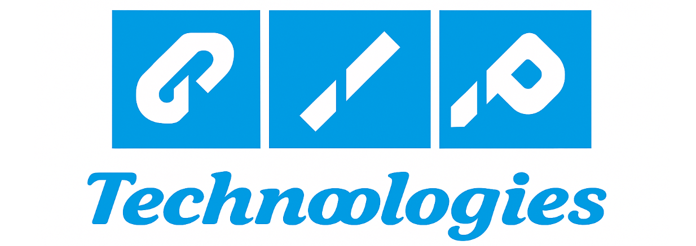

A quality engineer who treats tests like a product.
Meticulous Senior SDET focused on test automation, software quality
engineering and backend validation — with a soft spot for clean
frameworks and a green CI pipeline.
what I do
I design and develop scalable, maintainable test frameworks
with Selenium, Playwright, Cypress and Appium — using Java,
JavaScript/TypeScript and Shell to keep things tidy.
End-to-end UI automation with cross-browser validation, test
strategy definition and modular framework design aligned with
enterprise-scale applications.
how I help teams ship
API testing with Postman and REST Assured, performance
analysis through JMeter and Grafana, and seamless CI/CD
integration via Jenkins, GitHub Actions and Docker.
Strong focus on quality ownership and continuous improvement —
optimising test workflows and driving automation-led solutions
that deliver measurable business impact.
Test Automation & SDET
API & Backend Testing
DB & Data Validation
CI/CD & DevOps
02 — Experience
a track record of shipping quality.
Seven years across product companies and academia — building
automation that scales and mentoring the engineers behind it.
Developed and maintained robust automation frameworks using Java, Selenium and Appium — enhancing coverage and reducing manual effort across web and mobile.
Implemented API testing strategies using REST Assured, ensuring backend services met functional and performance requirements.
CIP Technologies
Software QA
Dec 2018 — Oct 2019

Collaborated with clients like Myntra to conduct comprehensive website testing, ensuring optimal user experience.
Designed and executed detailed test cases, identifying and resolving critical issues before deployment.
Enhanced testing efficiency by introducing automated tools, reducing testing time by ~30%.
Performed API testing using Postman, manual testing and mobile testing on Android / iOS.
MVJ College of Engineering & Technology
Assistant Professor — Technical
Jan 2018 — Dec 2018
Parul University
Assistant Professor — Technical
Aug 2012 — Mar 2017
03 — Education
degrees & certifications.
Computer Science core, plus certifications in modern automation
tooling to keep the foundation sharp.
Degree · M.Tech
M.Tech. in Computer Science
Parul University
Jul 2013 — May 2015
Coursework
Distributed Database Systems
Cloud Computing
Foundation of Algorithms
Degree · B.Tech
B.Tech. in Computer Science
Parul University
Jul 2008 — May 2012
Coursework
Database Management Systems
Algorithms & Optimisation for Big Data
Machine Learning
Online certifications
S
Simplilearn
Automation Testing Masters Program
Verified credential
Self-paced program
I
IBM
Automation Test
Verified credential
Awarded credential
04 — Skills
the toolkit.
A pragmatic mix — proven test automation tools and languages,
observability stacks, and the CI plumbing that ties them together.
Languages
Java
JavaScript
TypeScript
HTML
CSS
C
Test Automation
Selenium
Cypress
Playwright
Appium
REST Assured
Postman
TestRail
DBeaver
SQL
Aginity Pro
Cross-browser & Mobile
BrowserStack
Android
iOS
Grafana
CI/CD & Containers
Jenkins
Git
GitHub Actions
Docker
Editors & Scripting
IntelliJ IDEA
Shell Script
Management & Tracking
Jira
ClickUp
Slack
05 — Resume
grab the full story.
Prefer a PDF in your inbox? Download the latest CV — projects,
experience and contact details in one place.
Antra Mahadkar Patel — Senior SDET
One-page resume · Updated for senior SDET roles · PDF